Chapter 6 Graphically supported hypotheses
In the last 2 chapters we presented the different types of plots. We now consider the task of structuring and presenting an entire analysis. We want to be able to provide novel insights from a dataset. Guided by the scientific method, a major aspect will be to give strong support for testable hypotheses. This is important in basic research to suggest experimental validations (does this gene affect growth?), but also for decision makers in public health (does smoking cause cancer?), public governance (would investing in education benefit economy?) or in the industry (would modifying a process increase productivity, modifying a product increases sales, etc.?).
This chapter covers:
the concepts of descriptive plots for data exploration, and associative plots to support testable hypotheses
how correlation and causation relate to each other
good practices to organize reports and presentations and to have visuals to convey one’s main message
6.1 Descriptive vs. associative plots
A typical data analysis starts with an exploration of the data. These are illustrated with descriptive plots showing how the data is distributed. This allows the audience and oneself to get familiar with the dataset in an unbiased fashion (e.g. number of participants in study, age and sex distributions). Afterwards, one typically highlights some interesting relationships between variables, often in order to suggest a testable, causal relationship. We call the latter types of plots associative plots.
6.1.1 Descriptive plots
Descriptive plots allow exploring how a variable or a set of variables distribute. For a univariate data these are histograms, single boxplots or violin plots. For multivariate data these are clustered heatmaps, PCA projections, etc.
Descriptive plots correspond to descriptions of the distribution \(p(X)\), where \(X\) is the variable we want to explore. In machine learning terms, they correspond to methods from unsupervised learning, e.g. k-means clustering, hierarchical clustering, PCA.
As an example, we can consider the diamonds dataset which contains the prices and other attributes of several diamonds. To first visualize the distribution of the weights (carat) of the diamonds, we can build a histogram:

6.1.2 Associative plots
Associative plots show how a variable depends on another variable.
For such plots, one typically uses the y-axis for the response variable (e.g. survival rate, skin cancer occurrence) and the x-axis for the explanatory variables (e.g drug dose, sun exposure). Suitable plots are side-by-side boxplots, scatter plots, etc.
Associative plots are graphical representation of the conditional distributions \(p(y|x)\) (pronounced “p of y given x”), where \(y\) is the response and \(x\) is the explanatory variable(s). When the conditional distribution \(p(y|x)\) actually depends on \(x\), we say that \(x\) and \(y\) are dependent. For instance, a scatterplot can show the trend that the response \(y\) increases on average as \(x\) increases. A boxplot can show that characteristic values of the distribution of \(y\) (quartiles, median) depend on the value of the category \(x\), etc.
In machine learning terms, associative plots correspond to methods from supervised learning (e.g. regression, classification). For instance, one can build a predictor that predicts the risk of skin cancer given the age and sun exposure of a person.
Based on the same diamonds dataset, we can now construct an associative plot to graphically support the hypothesis that the price of a diamond increases with increasing weight (carat):
ggplot(diamonds, aes(carat, price)) +
geom_point(alpha = 0.05) + # alpha: point transparency
stat_smooth() + mythemeFigure 6.1: Price increases nearly linearly with carat
6.1.3 Correctly using descriptive and associative plots
Claims are often not well supported with descriptive plots. For instance, claiming that “The experiments are reproducible because the replicate samples group together on the projection of the first PCA 2D-plane” is wrong. PCA is a visualization designed to capture the joint distribution of all data and not to assess reproducibility between given pair of samples. Instead claims are better supported using associative plots between an appropriate response variable on the y-axis against an appropriate dependent variable on the x-axis. In this example, we want to claim that there is a higher similarity between replicate experiments than across experiments from different conditions. To this end, one can create a boxplot that shows the distribution of the correlation between pairs of samples (y-axis) for two categories (x-axis): pairs of replicate samples and pairs of sample from different conditions.
6.2 Correlation and causation
One goal of data analysis is to provide a hypothesis about the underlying causal mechanisms.
Causal conclusions can be established in specific cases where the data has been gathered in a controlled fashion. This includes experimental perturbations where a single variable is changed and every other condition is kept the same. For instance, one can vary the dose of a drug given to a bacteria and measure its growth, in otherwise identical growth conditions. Randomized controlled trials constitute another example where a treatment and its placebo are administered to a cohort randomly, therefore preventing by design associations with other factors.
However, most of the time, we have access to observational data, i.e data sampled without the possibility to control the conditions. With observational data, we can assess statistical dependencies, or associations, between variables such as correlations, enrichments, etc. However, these do not necessarily imply a causal link.
In the following sections, we go through the elementary situations of non-causal associations and how to address these issues through data visualization and appropriate wordings of the claims. These are:
- The association is not statistically supported
- The causal relationship is reverse
- The association is induced by a third variable
Associations between variables that are not due to a causal relationship are sometimes called “spurious correlations”. We prefer however to not use the term spurious correlation because genuine statistical dependencies that are non-causal are widespread. It is not the correlations that are spurious, but their causal interpretation.
6.2.1 The association is not statistically supported
Often, the observed association between variables arose by chance. Would the data collection be repeated, or performed for a longer period of time, the association would not show up any longer. There are two main reasons for this:
The association is driven by few data points. Graphically showing all data points including outliers can help (See Anscombe’s quartet 9). Hypothesis testing can be used to assess this possibility (See next Chapters).
The dataset includes so many variables that the chance to have one pair of variables associating is high. This is generally called data dredging, data fishing, data snooping, or cherry picking. An example of data dredging would be if we look through many results produced by a random process and pick the one that shows a relationship that supports a theory we want to defend. An example is given in Figure 6.2.
In the statistical literature, this problem is called “multiple testing”. It will be treated in a later chapter.
Figure 6.2: Example of a correlation discovered in a dataset with a very large set of variables. Source: http://www.tylervigen.com/spurious-correlations.
6.2.2 Reversing cause and effect
We now assume the association did not arise by chance. Unlike causal relationships, statistical dependencies are symmetric (if A correlates with B, then B correlates with A). Hence, a typical mistake are claims where cause and effects are reversed.
A form of this claim actually made it into an op-ed in the New York Times titled Parental Involvement Is Overrated10. Consider this quote from the article:
When we examined whether regular help with homework had a positive impact on children’s academic performance, we were quite startled by what we found. Regardless of a family’s social class, racial or ethnic background, or a child’s grade level, consistent homework help almost never improved test scores or grades… Even more surprising to us was that when parents regularly helped with homework, kids usually performed worse.
In fact, a very likely possibility is that the children needing regular parental help receive this help because they do not perform well in school.
Further examples of reversing cause and effect include the following statements:
- People with healthier diet have higher blood pressure.
- Individuals in a low social status have a higher risk of schizophrenia.
- The number of fire engines on a fire associates with higher damages.
- Entering an intensive care unit increases your chances of dying.
There is no firm way to decide the direction of causality from a mere association. It is therefore important to consider and discuss both possibilities when interpreting a correlation.
6.2.3 The association is induced by a third variable
Another general issue is when an association is due to a third variable. There are several scenarios.
Given two variables \(x\) and \(y\), we will now consider three basic configurations where a third variable \(z\) could be causally related to them and how this affects associations between the variables \(x\) and \(y\) (Figure 6.3). We show causal relationships using causal diagrams where variables are nodes and causal links are depicted as directed arrows. We denote \(x \perp y\) when variables \(x\) and \(y\) are statistically independent and \(x \not\perp y\) when they are dependent. Also, \((x \perp y) | z\) means that \(x\) and \(y\) are independent given \(z\).

Figure 6.3: Elementary causal diagrams involving two variables of interest X and Y and a third variable Z.
6.2.3.1 Common cause
The statistical dependency between two variables can be due to a common cause. For instance, it had been reported that among students, smokers had higher university degrees than non-smokers. This association was due to student age as a common cause. With time, students are more likely to have started smoking and to have advanced further in their studies.
Plots can help to identify such situations. One can stratify by age and show that this positive association vanishes. This rules out a causal association because a causal association is expected to hold for all ages (or at least at some age).
To understand the situation we will now generate artificially a dataset where two random variables \(x\) and \(y\) share a common cause \(z\).
We consider the following process:
- We toss a fair coin twice and record \(z\) the number of heads obtained. \(z\) is thus equal to 0,1, or 2.
- We draw a value \(x\) randomly according to a Gaussian distribution with mean equals to \(z\) and standard deviation 1. Hence, \(x\) will be a random real number that tend to have higher values with higher values of \(z\).
- We draw a value \(y\) randomly according to a Gaussian distribution with mean equals to \(2 \times z\) and standard deviation 1. Hence \(y\) will be a random real number that tend to have higher values with higher values of \(z\).
We then repeat this process \(n=1,000\) times.
In R this can done with the following code:
###############
## common cause
## x <- z -> y
###############
set.seed(0)
n <- 1000 # number of draws
# z: n draws of the binomial
# with 2 trials and prob=0.5
z <- rbinom(n, 2, prob=0.5)
# x: Gaussian with mean z
x <- rnorm(n, mean=z, sd=1)
# y: Gaussian with mean 2*z
y <- rnorm(n, mean=2*z, sd=1)
# gather into a data table
# we make z a factor for convenience with plotting functions
dt <- data.table(
x,y,
z = factor(paste0("z=",z))
)We check whether the simulations worked. First, \(z\) distributes as expected with about 25% draws with 0 heads, 50% with one head, and 25% with 2 heads:
## z
## 0 1 2
## 244 506 250Second, \(x\) and \(y\) depend on \(z\):
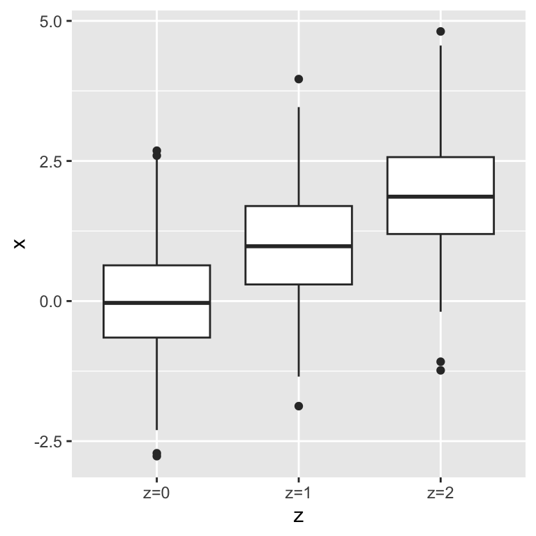
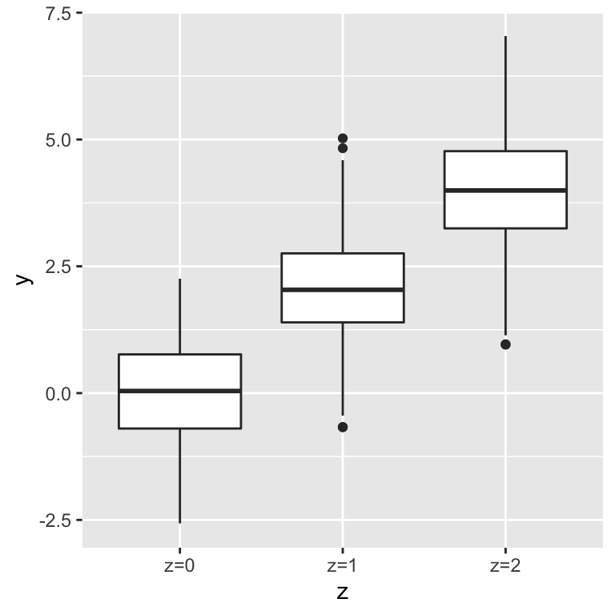
As a consequence, \(x\) and \(y\) correlate with each other:
# You can pick different formulae in geom_smooth
ggplot(dt, aes(x=x, y=y)) + geom_point() + geom_smooth()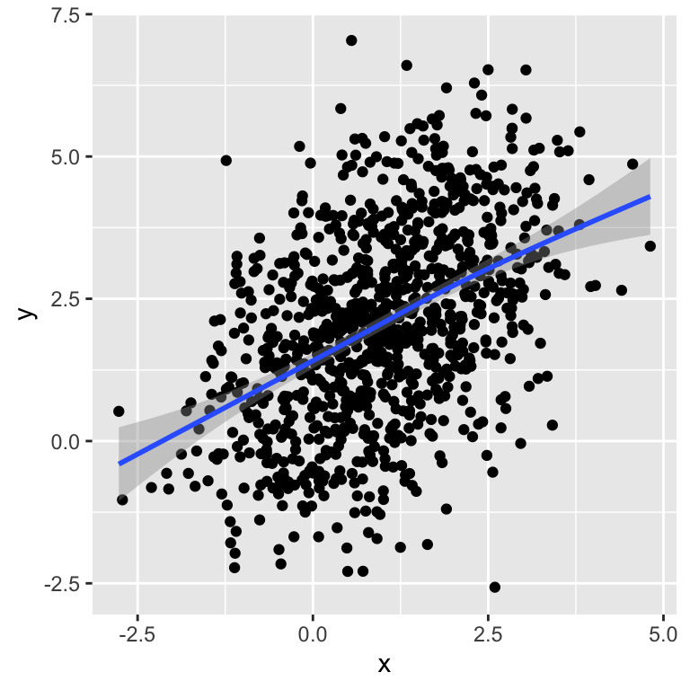
## [1] 0.4535741This correlation between \(x\) and \(y\) is due to the common cause \(z\). To show evidence for this issue, one can plot stratified by the values of \(z\). In each group, there is no association between \(x\) and \(y\).
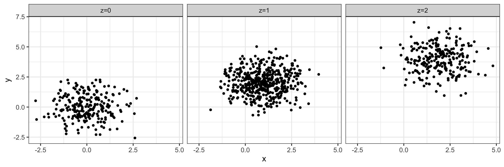
Moreover, one can compute the correlation also stratified by the value of \(z\). We see that in each group the correlation is near 0.
## z correlation
## 1: z=2 -0.0005907227
## 2: z=1 0.0457336976
## 3: z=0 -0.0107107309In our simulation, conditioning on a third variable has ruled out direct correlation and, therefore, causation. Statistically speaking, we can state that the two variables \(x\) and \(y\) are correlated, but their correlation is explained by \(z\). Conditioned on \(z\), their correlation is basically zero. This rules out a causal relationship from one to the other. Correlation never proves causation. However, conditioning can rule out causation.
6.2.3.2 Indirect association
We now simulate the case of an indirect association. To this end we consider the following process:
- We toss a coin once. We record \(x=1\) if it is a head, and \(x=0\) if it is a tail.
- If \(x=0\), we toss the coin once. If \(x=1\), we toss the coins twice. We record \(z\), the number of heads of this second step.
- We draw a value \(y\) randomly according to a Gaussian distribution with mean equal to \(z\) and standard deviation 0.5. Hence, \(y\) will be a random real number that tend to have higher values with higher values of \(z\).
The following R code simulates such data:
# first step: tossing a coin once
# record x=1 if head, x=0 if tail.
x <- rbinom(n, size=1, prob=0.5)
# second step
# if x=0, toss the coin once, if x=1, toss the coins twice
# record z the number of heads of this second step.
z <- rbinom(n, size=x+1, prob=0.5)
## y: Gaussian with mean=z
y <- rnorm(n, mean=z, sd=0.5)
dt <- data.table(
x = factor(paste0("x=",x)),
y,
z = factor(paste0("z=",z))
)We see that \(y\) associates with \(x\):
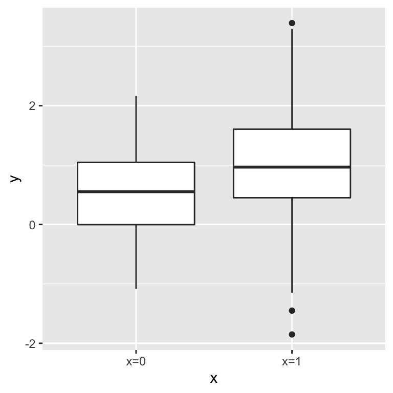
However this association vanishes when we condition on \(z\):
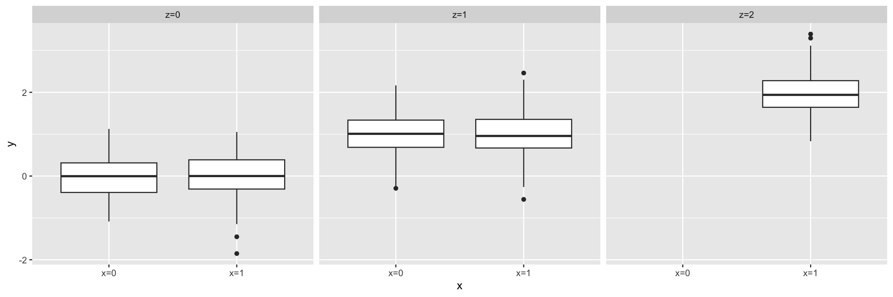
Conditioning on the third variable has helped ruling out a direct causal relation between \(x\) and \(y\). Note, however, that in this simulation there is an indirect causal relation between \(x\) and \(y\). From an observational data point of view, the situation is very similar to the common cause situation. Interpretations from the application field are needed to suggest whether such data supports an indirect association or a common cause.
A concrete example of an indirect association is provided by Rafael Irizzary in his book “Introduction to Data Science” which we reproduce in the following.
For this, we consider the admission data from six U.C. Berkeley majors on 1973. The data shows at first sight that more men were being admitted than women: 44% men were admitted compared to 30% women. We can load the data and compute the percent of men and women that were accepted like this:
library(dslabs)
data(admissions)
admissions <- as.data.table(admissions)
admissions[, sum(admitted*applicants)/sum(applicants), by=gender]## gender V1
## 1: men 44.51951
## 2: women 30.33351Closer inspection shows a paradoxical result. Here are the percent admissions by major:
stats <- admissions[, c('major', 'gender', 'admitted')] %>%
dcast(...~gender, value.var='admitted') %>%
.[, women_minus_men := women - men]
head(stats)## major men women women_minus_men
## 1: A 62 82 20
## 2: B 63 68 5
## 3: C 37 34 -3
## 4: D 33 35 2
## 5: E 28 24 -4
## 6: F 6 7 1Four out of the six majors favor women. More importantly, all the differences are much smaller than the 14.2 difference that we see when examining the totals.
The paradox is that analyzing the totals suggests a dependence between admission and gender, but when the data is grouped by major, this dependence seems to disappear. What’s going on? This actually can happen if an uncounted confounder is driving most of the variability.
We define three variables: \(X\) is 1 for men and 0 for women, \(Y\) is 1 for those admitted and 0 otherwise, and \(Z\) quantifies the selectivity of the major. A gender bias claim would be based on the fact that \(\mbox{Pr}(Y=1 | X = x)\) is higher for \(x=1\) than \(x=0\). However, \(Z\) is an important confounder to consider. Clearly \(Z\) is associated with \(Y\), as the more selective a major, the lower \(\mbox{Pr}(Y=1 | Z = z)\). But is major selectivity \(Z\) associated with gender \(X\)?
One way to see this is to plot the total percent admitted to a major versus the percent of women that made up the applicants:
admissions %>%
.[, .(sum(admitted * applicants)/sum(applicants),
sum(applicants * (gender=="women")) /sum(applicants) * 100), by=major] %>%
ggplot(aes(V1, V2, label = major)) +
geom_text() + labs(x='Major Selectivity', y='Percent Women Applicants') + mytheme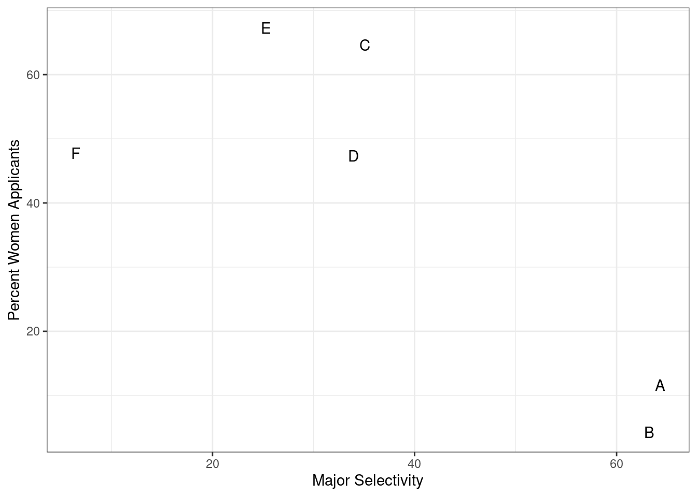
There seems to be association. The plot suggests that women were much more likely to apply to the two “hard” majors: gender and major’s selectivity are confounded. Compare, for example, major B and major E. Major E is much harder to enter than major B and over 60% of applicants to major E were women, while less than 30% of the applicants of major B were women.
The following plot shows the number of applicants that were admitted and those that were not by gender and major:
admissions_plot <- admissions[, `:=`(yes = round(admitted/100*applicants),
no = round(applicants - admitted/100*applicants )),
by=.(major, gender)] %>%
melt(measure.vars=c('yes', 'no'), value.name='number_of_students',
variable.name='admission')
ggplot(admissions_plot, aes(gender, number_of_students, fill = admission)) +
geom_bar(stat = "identity", position = "dodge") +
facet_wrap(. ~ major)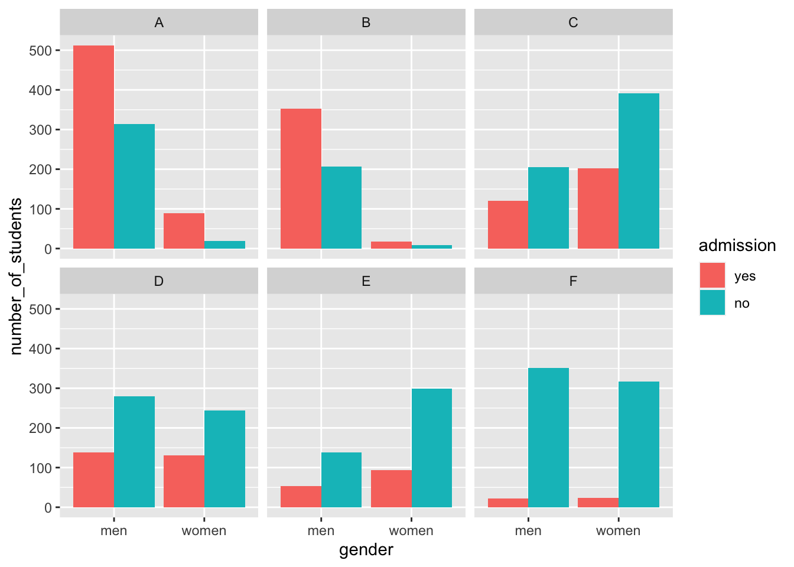
The visualization breaks down the acceptances by major. This breakdown allows us to see that the majority of accepted men came from two majors: A and B. It also lets us see that few women applied to these majors.
Changing the position to "fill" in geom_bar() returns the following plot:
ggplot(admissions_plot, aes(gender, number_of_students, fill = admission)) +
geom_bar(stat = "identity", position = "fill") +
ylab("proportion admitted") +
facet_wrap(. ~ major)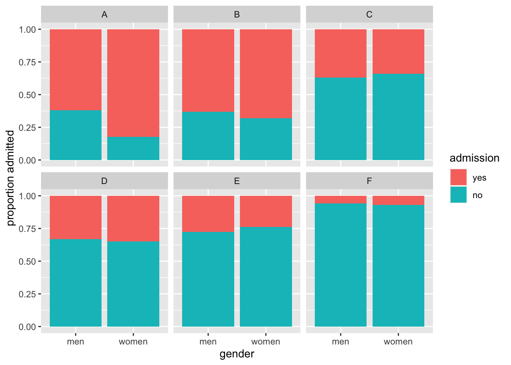
Setting "fill" as the position argument makes each set of stacked bars to have the same height. This makes it easier to compare proportions across groups. However, note that it can be hard to compare some groups with increasing number of stacked bars.
Altogether, this data suggests the following causal interpretation:
\(\text{Gender} \rightarrow \text{Major} \rightarrow \text{Admission}\)
In this interpretation of this data, women are proportionally less admitted because they choose more selective majors. Hence the association is correct, causal, in the right orientation, but it is indirect.
6.2.3.3 Common consequence
The last elementary situation is the case where the third variable is a common consequence. One fun imaginary example is given by Judea Pearl in “The Book of Why” 11 about talent and beauty among Hollywood stars.
We assume that:
- Talent for acting is a quantitative value that is randomly distributed among the human population.
- Beauty is a quantitative value \(y\) randomly distributed among the human population and independently of talent for acting.
- Hollywood stars must have talent for acting and beauty or be very beautiful or very good actors.
We can use the computer to simulate such a situation as:
- draw \(x\) with a Gaussian of mean 0 and standard deviation 1
- draw \(y\) with a Gaussian of mean 0 and standard deviation 1 independently of \(x\)
- let \(z=1\) if \(x+y>1\)
The following code simulates such data:
#############
## common consequence x->z<-y
#############
x <- rnorm(n) # talent for acting
y <- rnorm(n) # beauty
z <- x+y > 1
dt <- data.table(x, y, z)In our simulated population, beauty and talent for acting do not correlate:
## x and y do not associate
ggplot(dt, aes(x=x, y=y)) + geom_point() + labs(x = 'Talent for acting', y = 'Beauty')
## [1] -0.03192247The fun paradox comes when we restrict our analysis to the Hollywood stars:
## x associates with y when z is TRUE
ggplot(dt[z == TRUE], aes(x=x, y=y)) + geom_point() + labs(x = 'Talent for acting', y = 'Beauty')
## [1] -0.5843082Hence, beautiful Hollywood stars tend to act worse than than less beautiful stars.
This paradox is known as Berkson’s paradox 12. Berkson originally reported the paradox on patient data collected in a hospital. As these patients are in the hospital because they are sick, risk factors for their diseases, which do not correlate in the general population, happen to negatively correlate among them. Studies based on hospital data only can suffer from such bias.
Altogether, the association arises once we condition on the third variable. This has two implications. First, conditioning should not be done systematically. Second, the data may already be conditioned and we are not aware of it! The data may have undergone some filtering during data analysis, or, less obviously, during data collection. Those possibilities should be considered when reporting associations between variables.
6.2.4 Simpson’s paradox
In 1951, Simpson demonstrated that a statistical relationship observed within a group of individuals could be reversed within all subgroups that make up that population. This phenomenon, where a variable X seems to relate to a second variable Y in a certain way, but flips direction when the stratifying for another variable Z, has since been referred to as Simpson’s paradox.

Figure 6.4: Simpson’s paradox. The sign (+ or -) designates positive or negative effects (causal diagram, left) or associations (right).
We simulate a dataset for illustrating the Simpson’s paradox with the help of the function simulate_simpson() from the library correlation:
# devtools::install_github("easystats/correlation")
library(correlation)
data <- simulate_simpson(n = 100, groups = 4, r = 0.6) %>% as.data.table
colnames(data) <- c('X', 'Y', 'Z')
data## X Y Z
## 1: 0.7571442 -0.2531470 G_1
## 2: 1.3253338 0.2617510 G_1
## 3: 1.1057654 -1.0828252 G_1
## 4: 0.1859743 -0.3760158 G_1
## 5: 2.1004333 1.5311882 G_1
## ---
## 396: 3.3302676 -3.4945929 G_4
## 397: 3.3872684 -4.4615286 G_4
## 398: 2.4995125 -4.9025445 G_4
## 399: 3.7237566 -4.7194693 G_4
## 400: 4.3878277 -3.5184049 G_4When visualizing the relationship between the variables X and Y, we observe a negative correlation between X and Y:
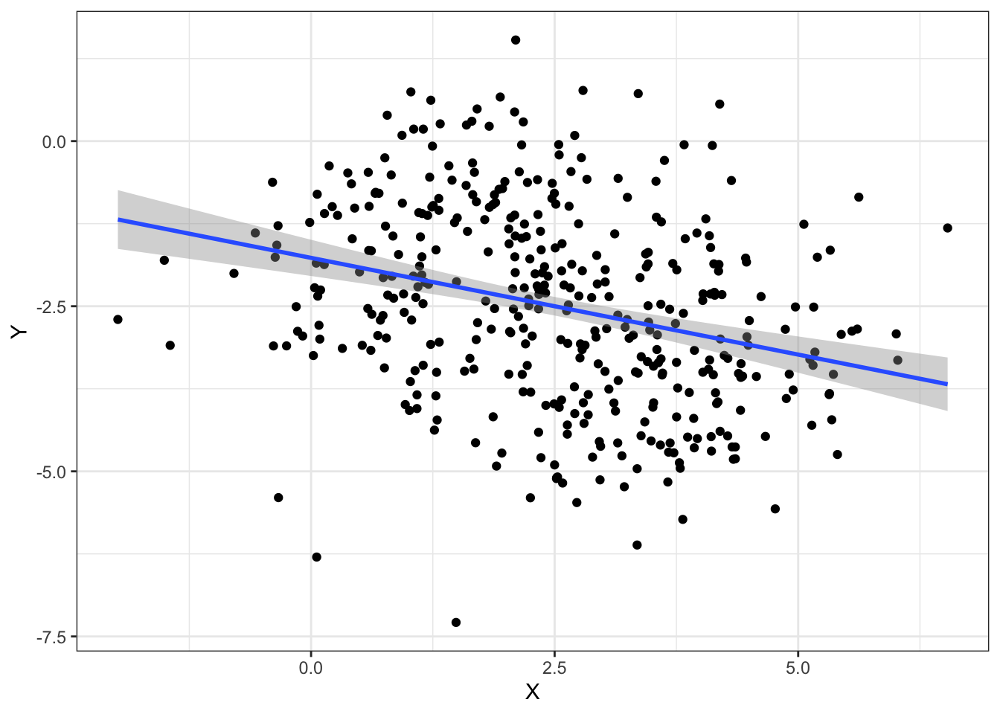
However, when grouping by the variable Z, we observe a positive correlation which is the opposite direction as before:
ggplot(data, aes(x = X, y = Y)) +
geom_point(aes(color = Z)) +
geom_smooth(aes(color = Z), method = "lm") +
geom_smooth(method = "lm") + mytheme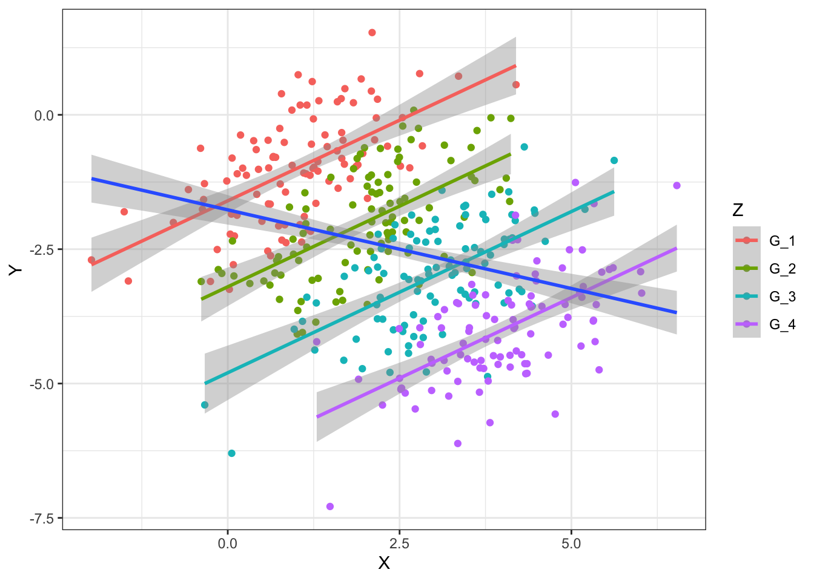
6.3 Data presentation as story telling
Data presentation plays an essential role in every field from academic studies to professional practices. However, it is often underestimated. Sometimes people work really hard on what they aim to present but fail to present it properly. The actual output of the analysis performed is almost singularly responsible for giving the message we want to give to the audience. For this, we have to first really understand who our audience is considering its background and interests.
After spending some time reflecting on the audience, we want to be able to present the data and its analysis clearly and efficiently. We want to create a good presentation that, like a good story, is easy to understand, has a clear message and is exciting.
6.3.1 What is a story?
Before discussing strategies for turning visualizations into stories, we have to understand what a story actually is. A story is a set of observations, facts, or events, that are presented in a specific order such that they create an emotional reaction in the audience. The emotional reaction is created through the build-up of tension at the beginning of the story followed by some type of resolution towards the end of the story. We refer to the flow from tension to resolution also as the story arc, and every good story has a clear, identifiable arc.
Commonly, a story teller first introduces the topic, then presents the challenge followed by a series of actions. Finally, the resolution is presented.
6.3.2 Presentation structure
Usually, a presentation is clearly divided into three main elements just like a good story: an introduction, a central part, and a closure.
6.3.2.1 Introduction
A presentation should have an introduction which clearly states the motivation to the topic, gives an overview on the background needed to understand the data and finally states the goals of the presentation. The open questions should be formulated here. What is not yet known or unclear in the field that your analysis addresses?
6.3.2.2 Development
The central part of the presentation is all about transforming hypotheses, claims and results into slides.
Two common misconceptions have to be avoided when presenting visualizations in a presentation. First, that the audience can see our figures and immediately infer the points we are trying to make. Second, that the audience can rapidly process complex visualizations and understand the key trends and relationships that are shown. We need to do everything we can to help our audience understands the meaning of our visualizations and see the same patterns in the data that we see. This usually means “less is more”.
Sometimes, however, we do want to show more complex figures that contain a large amount of information at once. In those cases, we can make things easier for our audience if we first show a simplified version of the figure before we show the final one in its full complexity.
Usually, we first show descriptive plots to first present the data and let the audience be able to understand the data. Then, we use associative plots to support claims, results and hypotheses.
Ideally, one slide contains exactly one claim supported by one plot. For this, the plot type should be chosen carefully. The title of the slide or figure is a very important element. The title should give the take-home message of the presented visualizations. It is a clear and simple interpretation of the plot. For instance, a title such as “Scatterplot of diamond price versus carat” for Figure 6.1 would not be informative since it is evident from the type of the plot and the axis labels that we look at a scatter plot of price versus carat. More informative is your interpretation of it, which the reader can judge from the plot. Do you want to claim that “Price increases nearly linearly with carat”, or rather that “There remains much price variation among diamonds with the same carat”? Such statements make informative slide titles.
6.3.2.3 Closure
The presentation should ideally have a strong closure. We can usually start with a summary of the presentation including a clear conclusion. With the conclusion, the audience should be able to answer the fundamental question: what do we learn from the presented data analysis? The conclusions typically correspond to the open questions formulated in the introduction. Often, an outlook containing possible next steps can be briefly summarized at the end of a presentation.
6.4 Guidelines for coloring in data visualization
Colors are an effective and powerful medium for communicating meaning. In data visualization, color sets the tone and enforces a message for the underlying visual display.
6.4.1 Color coding in R
Basically, there are four options for color coding with ggplot2 in R:
- Using default colors
- Explicitly setting color names (e.g. “red”, “blue”)
- Explicitly setting RGB or HTML color codes (e.g. 00-FF)
- Explicitly setting color palettes
6.4.1.1 Color palettes
The package RColorBrewer provides a comprehensive set of nice color palettes:

Generally, we use sequential palettes for continuous variables to show quantitative differences:

We use qualitative palettes for categorical variables to separate items into distinct groups and we use diverging palettes for numeric variables that have a meaningful central value or breakout point (e.g. 0).

6.4.2 General rules for color coding
Even though color coding can be very helpful in several visualizations, it has to be used with precaution. Like all aspects of visual perception, we do not perceive color in an absolute manner. Perception of an object is influenced by the context. Hence, visual perception is relative, not absolute.
Rule #1: consistent background
If we want different objects of the same color in a table or graph to look the same, we have to make sure that the background is consistent.
In the following example, the squares seem to have a different color but they actually don’t. The background makes it hard to compare them.

Rule #2: sufficient contrast for visibility
If we want objects in a table or graph to be easily seen, we need to use a background color that contrasts sufficiently with the object that we want to visualize.
Rule #3: meaningful color usage
We use color coding only when we really need it to serve a particular communication goal.
In the following example, the added colors provide no additional information:

Rule #4: color usage with restraint
We use different colors only when they correspond to differences of meaning in the data.
Rule #5: less is more
Use soft, natural colors to display most information and bright and/or dark colors to highlight only particular information that requires greater attention.
6.5 General do’s and don’ts in data visualization
6.5.1 Do’s
Keep visualizations simple
Keeping simple visualizations is probably the most important guideline. Often people assume that complex plots are useful visualizations, while the opposite is actually true. Good plots should have simple messages and make the visualized data as easy to understand as possible. A visualization should be effective and simple. Do not try to present too much information.
Have meaningful and expressive titles
Figure title (or slide tile) states the finding (what do we observe?) and not the methods (how do you do it?). For example a good title is “The further away an airport, the longer the flight” instead of “Scatter-plotting air time and distance”.
flightsLAX <- fread('extdata/casestudy1/flightsLAX.csv')
ggplot(flightsLAX, aes(DISTANCE, AIR_TIME)) +
geom_point(alpha=0.2) +
geom_smooth(method='lm') +
labs(title = 'The further away an airport, the longer the flight') + mytheme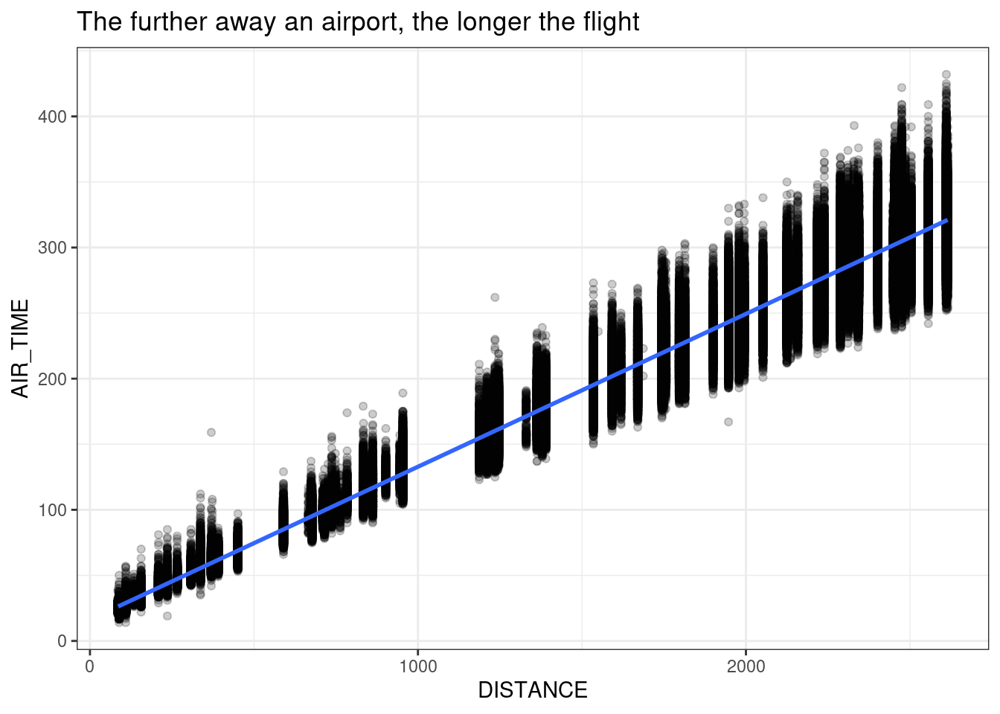
Always label the axes
Axes, colors, and shapes should be labelled. All labels should be legible for the audience (big fonts).
Always keep the goal of the visualization on mind
Always think about the message that needs to be reported with the visualization. What is the goal? Focus on the story and the claims or conclusions you want to make.
Know when to include 0
When using barplots, it is typically dishonest not to start the bars at 0. This is because, by using a barplot, we are implying the length is proportional to the quantities being displayed. By avoiding 0, relatively small differences can be made to look much bigger than they actually are. This approach is often used by politicians or media organizations trying to exaggerate a difference.
We can have a look at this illustrative example:

The plot was shown by Fox News (http://mediamatters.org/blog/2013/04/05/fox-news-newest-dishonest-chart-immigration-enf/193507). From the plot above, it appears that apprehensions have almost tripled, when in fact they have only increased by about 16%. Starting the graph at 0 illustrates this clearly:
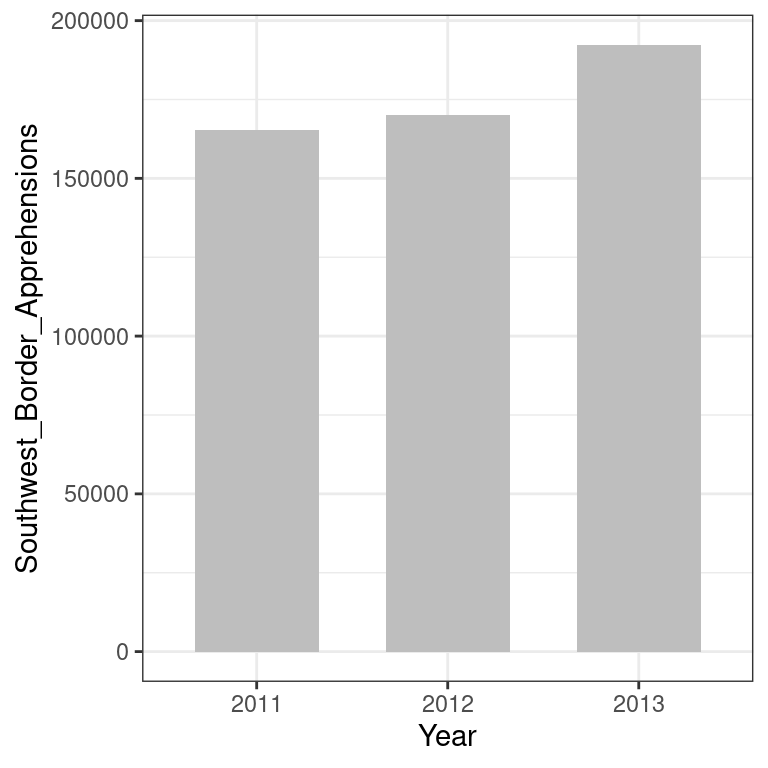
6.5.2 Don’ts
Good plotting style is like good writing style: say the most with the least. We can here quote Antoine de Saint-Exupery:
“Perfection is achieved not when there is nothing more to add, but when there is nothing left to take away”.
The concept of data-ink ratio is therefore useful to critically chose a visualization. In particular, visualizations that contain at least one the following criteria can be considered as chart junk and should be avoided:
- double encoding (color and axis encode the same)
- heavy or dark grid lines
- unnecessary text
- ornamented chart axes
- pictures within graphs
- shading or pseudo 3D plots
A good example of a transformation of a bad plot into a good plot can be obtained from: https://www.darkhorseanalytics.com/blog/data-looks-better-naked/
Avoid pseudo three-dimensional plots
The figure below, taken from the scientific literature 13 shows three variables: dose, drug type and survival. Although our screens are flat and two dimensional, the plot tries to imitate three dimensions and assigns a dimension to each variable.

However, humans are not good at seeing in three dimensions (which explains why it is hard to parallel park) and our limitation is even worse with pseudo-three-dimensions. To see this, we can try to determine the values of the survival variable in the plot above. Probably, we cannot really tell when the purple ribbon intersects the red one.
Instead, we can easily use color to represent the categorical variable to avoid the pseudo 3 dimensional construction:

This plot demonstrates that using color is more than enough to distinguish the three lines.
Do not manipulate plots
A good practice in data science is to be as honest as possible with the plots we create. Intentional manipulation is definitely a “don’t”.
6.6 Summary
By now, you should be able to:
Distinguish exploratory figures showing data distributions, from associative figures
Know and mind the basic reasons for misleading associations:
- not robust
- reverse causal direction
- common cause
- indirect effect
- common consequence
Mind data-ink ratio by showing more data and reducing decorations
Prepare your report to provide novel insights. The audience should be able to easily answer the question: “What did I learn?”
6.7 Resources
https://humansofdata.atlan.com/2019/02/dos-donts-data-visualization/
Fundamentals of Data Visualization, Claus O. Wilke, https://clauswilke.com/dataviz/telling-a-story.html
Introduction to Data Science, Rafael A. Irizarry, https://rafalab.github.io/dsbook/index.html
Advanced (proofs of conditional dependencies for the 3-variable elementary causal diagrams):
C. Bishop, Pattern Recognition and Machine Learning. https://www.microsoft.com/en-us/research/people/cmbishop/prml-book/
https://opinionator.blogs.nytimes.com/2014/04/12/parental-involvement-is-overrated↩︎
DNA Fingerprinting: A Review of the Controversy Kathryn Roeder Statistical Science Vol. 9, No. 2 (May, 1994), pp. 222-247↩︎